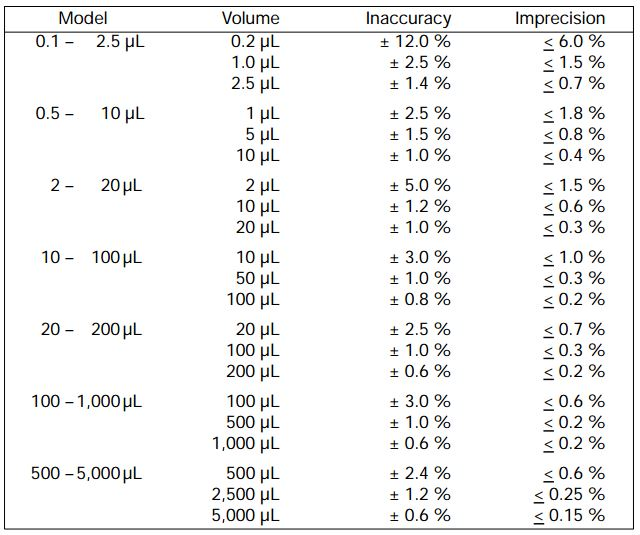

Introduction to Measurements
Important terms/concepts
- Accuracy/Precision
- Error (in observation)
- Microliters/milliliters/liters
- Micropipette
- Pipette tubes
- Cross-contamination
Some Questions
- What do we mean when we say we measure something?
- What are some things we might measure in doing our science?
- How do we determine if our measurements are valid?
Tip
Post-Class Review
Some sheets will come with a list of important terms and concepts. Your notes from the class should (and hopefully always will) contain enough information for you to successfully define these terms. Go through your notes and fill in any missing definitions. If you have questions ask. The terms and concepts will almost certainly be used in quizzes/assignments and so you need to know them.
Measurement in the lab.
"Measure what can be measured, and make measurable what cannot be measured" - Galileo
Measurement is a cornerstone of scientific technique. What we will introduce in this class are some of the basic tools and techniques of measurement in the molecular biology lab. We will not cover all the possible techniques today, but will get an introduction to key pieces of equipment and how to use them properly. Throughout the course, we will work on developing your effective use of the equipment, as well as your understanding into why we use these techniques.
Pipette Specifications
The micropipette is the most commonly used measurement device in the molecular biology lab. Here are some details about the device.

Specifications on pipette measurement and accuracy from the Eppendorf website.

YouTube Playlists
links
- Powers of 10 - A (classic) Video on the powers of 10, and how they matter to you.
- Nikon Universcale - Another interesting look at powers of 10.